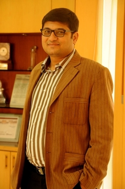

Teach for India Education & Research Samiti was founded with the objective of creating state-of-art, world class, high quality technical education facilities at Indore, the commercial capital of Madhya Pradesh. As the first step towards fulfillment of its objectives, the society established Acropolis Institute of Technology & Research, Indore with Bachelor of Engineering courses in the year 2005 and Post-graduate degree courses in Business Administration (MBA) & Computer Applications (MCA) in the year 2006.
Mission To foster an understanding and appreciation of the intellectual and cultural heritage of man. To cultivate in its students values of love and compassion, so as to create a world of happiness and contentment for others and themselves. Vision To envisage future challenges in the field of education both at a National and International level. Educate and train students so that they can become qualified & highly skilled professionals and meet future challenges and needs of globalization with panache. To inculcate a research culture to help India transform from a developing to a developed country. The Institute strives to produce young people who will become builders of future India. A generation with high skills, knowledge, expertise and wisdom for better productivity and economic upliftment of the society & the country. Group Philosophy We believe in overall development of our students so that they not only acquire relevant knowledge but also emerge as a responsible citizen.
Participative management To benefit from group synergy Knowledge integration Delegation & decentralization Commitment & involvement of each faculty & staff. Encouragement to innovations & creativity Striving for systems perfection. Speed & quality of response. Meeting aspirations of employees & team work. Community welfare. Concern for environment. Growth of an individual. We believe that our faculties are action oriented & willing to take initiatives. They are willing to learn, feel free to express their ideas & experience. Faculty members collaborate with a feeling of family in an environment which is encouraging for development. We believe that systems are no substitute for the warmth of feeling between different departments.
.jpg)